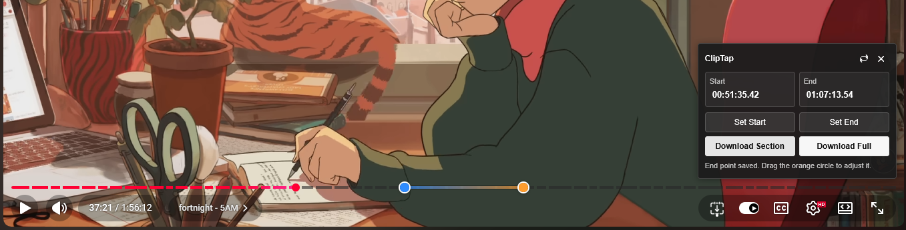
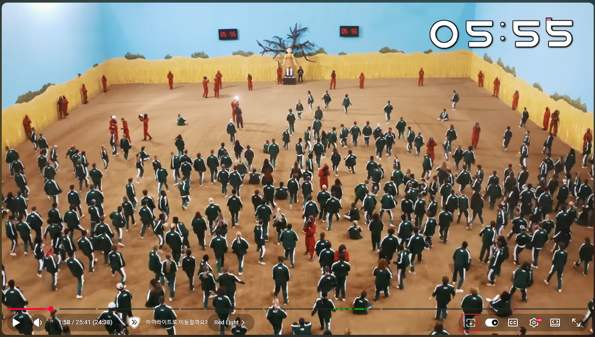
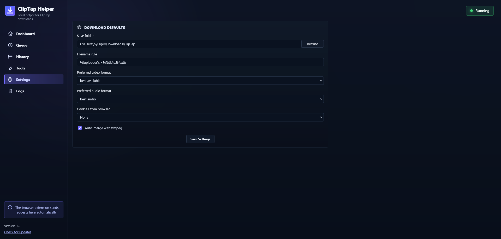
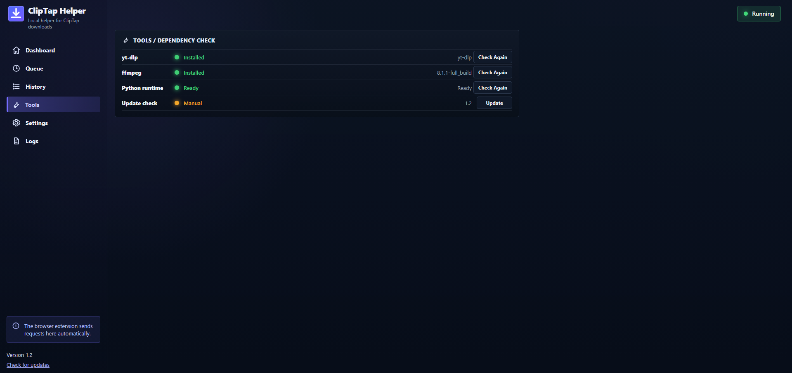
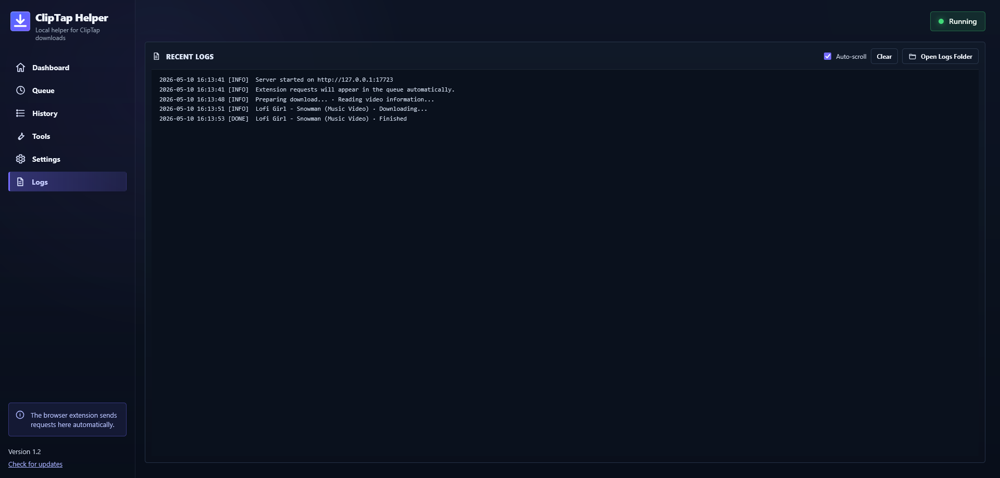

Set start and end points
Capture timestamps from the current playback position or type exact values with decimal seconds.
YouTube clipping · local helper · yt-dlp
ClipTap puts start and end controls directly inside the YouTube player, then sends the job to a local Helper dashboard that manages yt-dlp, FFmpeg, progress, settings, and logs.

Features
ClipTap keeps YouTube interaction lightweight while the local dashboard handles the messy download work.
Capture timestamps from the current playback position or type exact values with decimal seconds.
Blue and orange handles appear on the YouTube progress bar so the selected range stays visible.
Loop the selected range before downloading to check whether the clip begins and ends correctly.
The Helper dashboard shows the queue, progress, dependency checks, logs, and download defaults.
Download the selected range or send the whole video to yt-dlp from the same player panel.
Save folder, filename rule, preferred formats, browser cookies, and merge options are managed in one place.
Inside YouTube
The ClipTap button lives beside YouTube’s own controls. The panel opens above the utility area, and the selected range appears directly on the timeline.



ClipTap Helper
Keep the browser extension simple and let the Helper handle yt-dlp, FFmpeg, status, settings, and logs.
Manager pages
Queue, Settings, Tools, Logs, and History are separated into dedicated pages so each view stays readable.




Install
Install the extension, start the local Helper, then clip from the YouTube player.
Start ClipTapHelper.exe. The local manager opens at 127.0.0.1:17723.
Use the Firefox XPI or load the Chrome / Edge package as an unpacked extension.
Set the range in the player and send a section or full-video download to the Helper queue.
Latest release
Release builds include the source package, Firefox extension, Chrome / Edge package, and Helper build files.
FAQ
Browser extensions cannot directly run local programs like yt-dlp or FFmpeg. The Helper receives requests locally and performs the actual download.
ClipTap supports both selected sections and full videos. Section downloads are handled by the Helper for better reliability.
The website and README share images from docs/images, so you only need one screenshot set.
Yes, but it also works with the default GitHub Pages domain. No server-side setup is required for the promo site.